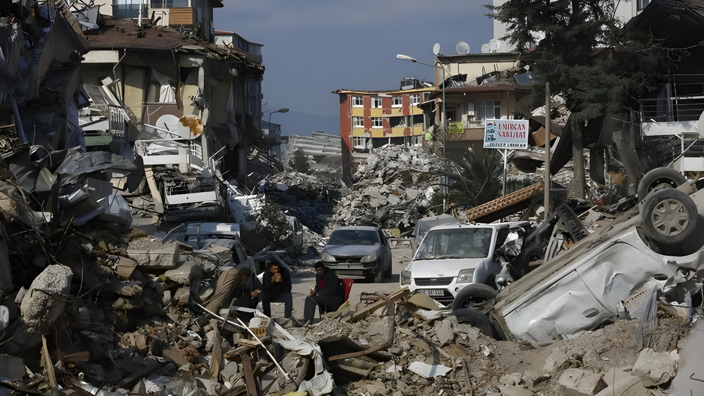
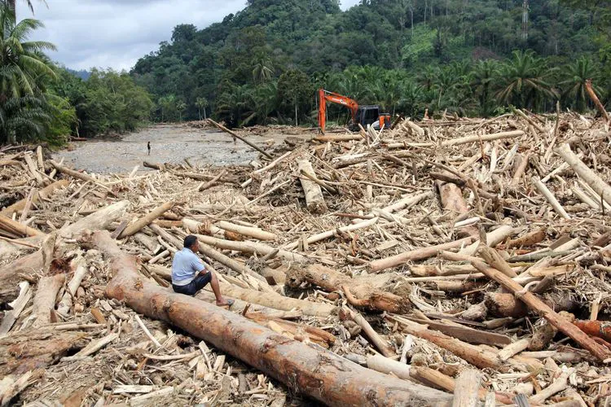
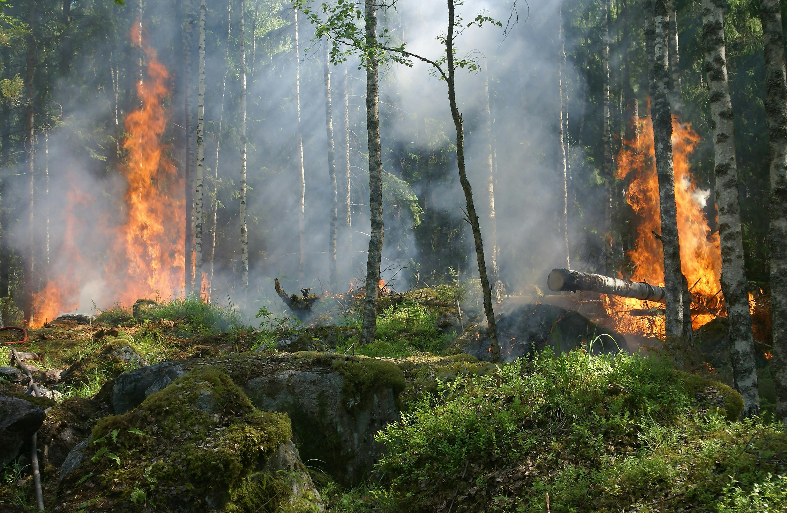

Meningkatkan Kesadaran dan Kesiapsiagaan Sejak Dini
Penanggulangan bencana adalah serangkaian upaya yang dilakukan untuk mencegah, mengurangi risiko, dan menangani dampak bencana agar korban jiwa dan kerugian dapat diminimalkan.
Pelajari Mitigasi
Getaran akibat pergerakan lempeng bumi. Ketahui jalur evakuasi dan tempat aman.

Terjadi karena curah hujan tinggi atau drainase buruk. Jaga kebersihan lingkungan.

Dapat disebabkan korsleting listrik atau kelalaian. Sediakan APAR di rumah.
Hubungi layanan darurat terdekat saat terjadi bencana.
Hubungi Sekarang